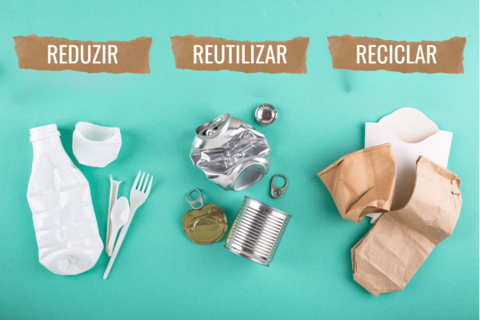
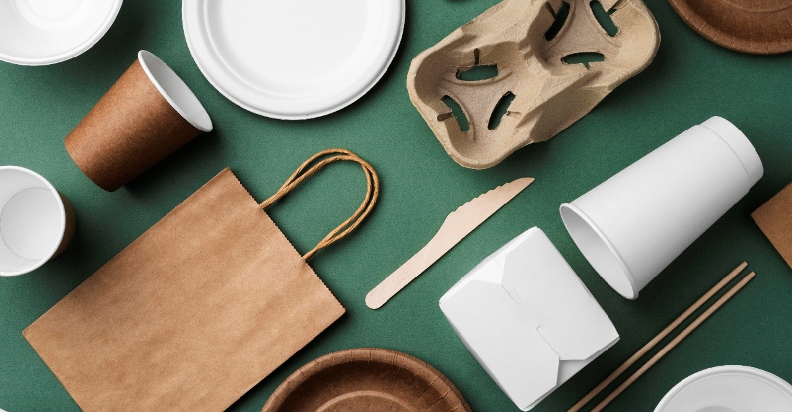
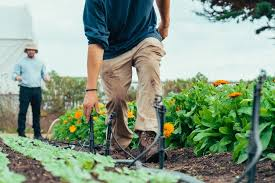
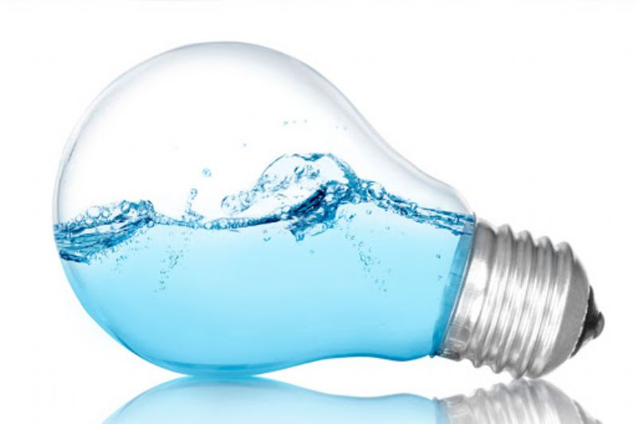
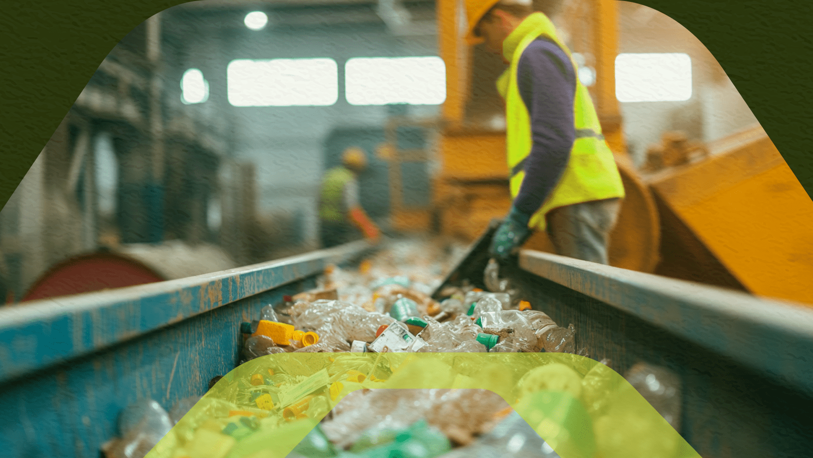
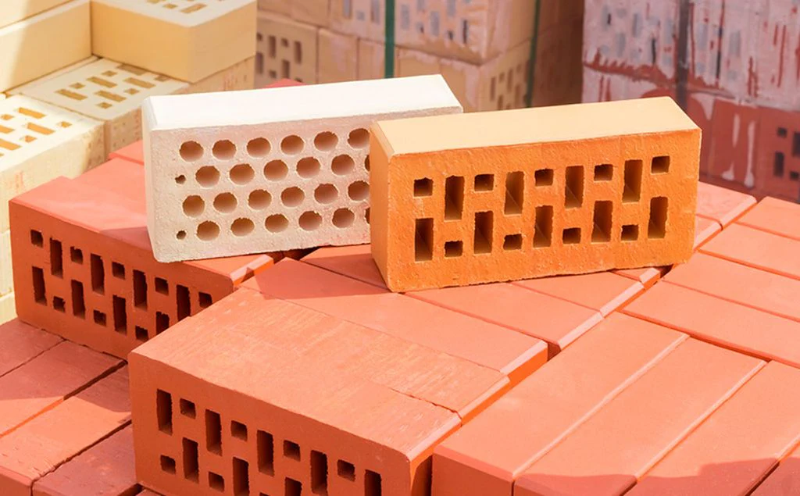
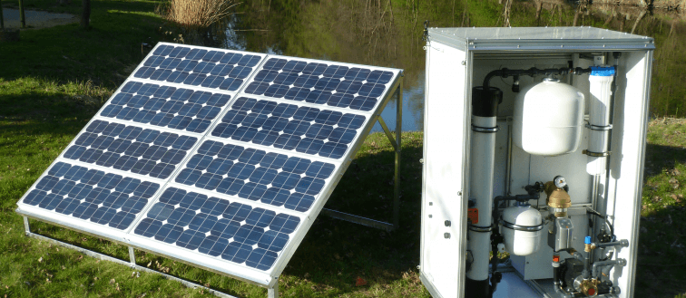
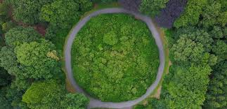

Empreender com responsabilidade ambiental e inovação
Bem-vindo!
Este lugar foi feito especialmente para jovens que querem começar seu próprio negócio de modo responsável e pensado. Aqui você vai achar inspiração, para transformar suas ideias em projetos reais que causam efeito positivo no meio ambiente e na sociedade.
Nosso objetivo é ajudar você em cada passo da viagem dando conteúdo que mistura inovação, sustentabilidade e visão do futuro.
Nós acreditamos que com dedicação é possível transformar problemas em oportunidades e criar negócios que realmente façam a diferença. Prepare-se para crescer, aprender e agir.
Por que empreender de forma sustentável?
Fonte: Banco de Imagens Sustentáveis
Empreender de jeito sustentável é chave para ter o eq͏uilíbrio ͏entre cres͏cimento de dinheiro, cuidado com o meio ambiente e bem͏-estar social. Ao usa͏r práti͏cas ͏sustentá͏veis, as͏ empresas dim͏inuem o efeito ruin no ambiente, ͏gua͏rdando recu͏rsos naturai͏s i͏mporta͏ntes para futuras gerações. Também, negócios sustentáveis trazem nov͏idades ͏eficiência
e com custos no longo prazo atraindo consumidores conscient͏es e financiadores comprometidos com uma responsa͏bilida͏de social. En͏trar para o empreendedo͏rismo com um olhar no sustentabilidade for͏talece a fama da empres͏a aumenta sua competiti͏vidade e cont͏ribui para um͏a socied͏ade mais justa e equalizad͏a. Em um mundo ͏onde os desafios ambientais e sociais tão c͏ad͏a vez mais ͏claros o ͏empreendedori͏smo sustentável é uma resposta int͏eligent͏e e precis͏a a͏pta a cr͏i͏ar u͏m v͏alor econômico enqua͏nto protege o planeta melhorando a qualidade de vida d͏e͏ todos.
Comunidade e colaboração
Fonte: The Yuri Arcurs Collection
A colaboração e a comunidade são essenciais no empreendedorismo sustentável. Juntos, empreendedores compartilham ideias, recursos e experiências, gerando soluções inovadoras para desafios ambientais e sociais. A comunidade fortalece o apoio mútuo, facilita parcerias e amplia o impacto das ações, criando um efeito multiplicador. Além disso, promove valores de responsabilidade e ética, estimulando práticas mais conscientes. Ao colaborar, os empreendedores contribuem para uma economia local mais forte e uma produção mais sustentável. Assim, a união fortalece negócios, gera aprendizado contínuo e ajuda a construir um futuro equilibrado e justo para todos.
Boas Práticas
Confira algumas práticas sustentáveis que podem ser aplicadas em negócios e no dia a dia:

Reduzir Plástico e Papel
Diminuir resíduos usando alternativas digitais e reutilizáveis.

Embalagens Sustentáveis
Prefira opções recicláveis ou biodegradáveis para reduzir impacto ambiental.

Fornecedores Locais
Valorize a economia regional e reduza poluição com transporte.

Economia de Energia e Água
Use lâmpadas de LED, desligue equipamentos e reaproveite água da chuva.
Educação Ambiental
Ensine práticas sustentáveis a colaboradores e clientes.

Gestão de Resíduos
Implemente coleta seletiva e compostagem para reduzir o impacto ambiental.
Casos de Sucesso
Fatemah Alzelzela
Foto: PNUMA
O exemplo de Fatemah Alzelzela, do Kuwait, que cofundou a organização sem fins lucrativos Eco Star. A organização coleta e recicla resíduos de casas, restaurantes e escolas. Com o país produzindo 1,5 kg de lixo por pessoa por dia e do qual 90% vai para aterros, ela investiu seus próprios recursos, usou as redes sociais para educar outros e inspirar mais de 20 mil seguidores e, desde 2019, ela já reciclou mais de 3,5 toneladas de plástico, 10 toneladas de papel e 120 toneladas de metal. O objetivo de Fatemah é promover a gestão sustentável de resíduos e inspirar ação coletiva.
Nzambi Matee
Foto: PNUMA/Georgina Smith
Nzambi Matee, fundadora da Gjenge Makers no Quênia, deixou o emprego e investiu todas as economias em um projeto para transformar plástico descartado em materiais de construção. Criou uma máquina que mistura plástico e areia para produzir tijolos mais leves, duráveis e acessíveis que o cimento, usados para pavimentar calçadas, inclusive em áreas de baixa renda. Hoje, a empresa fabrica cerca de 1.500 blocos por dia, mostrando ser possível adotar uma economia circular.
Lefteris Arapakis
Foto: PNUMA
Quando Lefteris Arapakis viu que suas redes de pesca estavam coletando mais plástico do que peixe na quinta geração da Grécia, ele se sentiu alarmado pelo futuro de seu meio ambiente. Isso inspirou-o a lançar a Enaleia, a primeira escola de pesca sustentável do país. Lá, os pescadores aprenderam a pescar resíduos plásticos e a trazê-los de volta para reciclagem, contribuindo para a limpeza de nossos oceanos. Além disso, a escola também ensinou a comunidade local sobre o tema, com mais de 80 toneladas de plástico removidas do mar até hoje. Em colaboração com uma organização holandesa, a Enaleia recicla redes de pesca usadas e transforma em produtos como tapetes ou meias. Graças ao seu compromisso com um impacto ambiental positivo, Lefteris foi nomeado Young Earth Champion pelo United Nations Environment Program.
Anna Luísa Beserra Santos
Foto: UN Environment Programme
Anna Luíza, com 22 anos, é uma j͏ovem empresária brasileira que cri͏ou uma nova tecnologia para tratar água da cisterna uzand͏o luz solar, que é única no mundo. A fu͏nda͏dora da e͏mpresa Safe Drinking Water For All (SDW) cria maneiras de saneamento para ajudar a vida dos grupos frágis. Com estud͏os no Brasil, Suiça e EUA, ela͏ ga͏nhou alguns prêmios tipo “Mude o Mundo como uma ͏Menina 2019”, ͏“Prê͏mio Hugo Werneck de Sustentabilidade” e͏ “͏Jovens Cam͏peões da Terra” da͏ ONU.
Curiosidades 🌱
Descubra fatos interessantes sobre sustentabilidade e inovação. Clique em um card para mais detalhes e depois teste seu conhecimento no quiz!

Blocos feitos com plástico
Transformar plástico em blocos mais leves que concreto.

Água solar para cisternas
Purificação de água de cisternas com energia solar.

Economia circular
Resíduos se tornam matéria-prima em novos ciclos.
Quiz: teste seus conhecimentos
Pronto para começar? Clique em Começar Quiz.
Resultado
Links Úteis e Dicas
SEBRAE Jovem Empreendedor
– Plataforma com cursos, consultorias e conteúdos para ajudar jovens a iniciar e desenvolver seus negócios de forma estratégica.
Programa Brasil Mais
– Iniciativa do Governo Federal que oferece ferramentas e mentorias para aumentar a produtividade e inovação nas empresas.